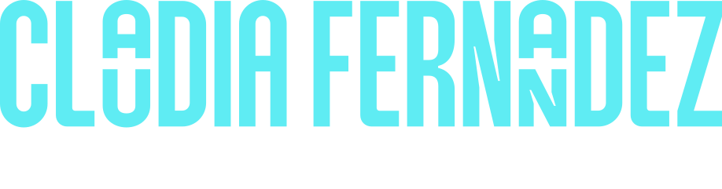

PARA EMPRESAS
Construí equipos que hagan avanzar tu negocio.
Encontrá talento, fortalecé capacidades y ordená procesos de personas con una consultoría que entiende el contexto antes de proponer soluciones.
Explorar soluciones para empresas
CFConsultoraPor eso, no solo llenamos vacantes. Transformamos la cultura, el liderazgo y el potencial humano, conectando la estrategia de tu negocio con decisiones de talento más claras, humanas y estratégicas.
Personas, estrategia y posibilidades en movimiento.
UN PUNTO DE PARTIDA CLARO
Cada desafío de talento pide una respuesta distinta. Elegí el camino que hoy necesita tu organización o tu carrera.
PARA EMPRESAS
Encontrá talento, fortalecé capacidades y ordená procesos de personas con una consultoría que entiende el contexto antes de proponer soluciones.
Explorar soluciones para empresasPARA PROFESIONALES
Reconocé tus fortalezas, preparate para decisiones importantes y diseñá una carrera con más claridad, foco y confianza.
Ver búsquedas activas“El talento gana partidos, pero el trabajo en equipo y la inteligencia ganan campeonatos.”
MICHAEL JORDANUNA FORMA DE TRABAJAR
No aplicamos procesos en automático. Empezamos escuchando para construir una respuesta que sea clara, viable y alineada con tus objetivos.
Diseñar el próximo pasoEscuchamos el desafío, las personas involucradas y el momento de la organización o carrera.
Convertimos el diagnóstico en un proceso con criterios claros, herramientas pertinentes y una meta compartida.
Trabajamos de cerca durante la implementación para dar continuidad, foco y capacidad de ajuste.
Revisamos avances, fortalecemos lo que funciona y dejamos capacidades instaladas para lo que sigue.
El punto de partida es tu realidad. La solución se diseña alrededor de lo que necesitás resolver, no al revés.
Selección, consultoría, capacitación y coaching se integran para acompañar tanto la incorporación como el desarrollo del talento.
Coaching y análisis grafológico aportan información adicional para reconocer fortalezas, estilos y posibilidades de evolución.
SOLUCIONES CON PROPÓSITO
Unimos experiencia en recursos humanos, selección especializada y desarrollo de personas para acompañar decisiones que impactan de verdad.
Encontramos perfiles críticos con un proceso estratégico, entrevistas por competencias y evaluación técnica. Coberturas ágiles para decisiones que no pueden esperar.
Ordenamos oportunidades de mejora en liderazgo, comunicación, productividad y desarrollo del talento para convertir los desafíos de personas en avances de negocio.
Diseñamos conversaciones y herramientas prácticas para fortalecer liderazgo, alinear equipos y generar nuevas posibilidades de acción.
Sumamos una mirada complementaria para identificar rasgos, potencial y estilos de comunicación en procesos de selección y desarrollo personal.
Creamos experiencias de formación y acompañamiento en competencias laborales, inglés corporativo y comunicación profesional internacional.
EXPERIENCIA QUE SE VE EN EL RECORRIDO
Una trayectoria internacional acompañando empresas, líderes y profesionales en Latinoamérica.
Consultora de RRHH · Coach · Perito Grafóloga
Licenciada en Relaciones del Trabajo, con una carrera internacional en consultoría, desarrollo profesional y recursos humanos en México, Argentina, Chile, Colombia y Centroamérica.
Idiomas & Comunicación Corporativa Internacional
Especialista en capacitación de inglés corporativo y comunicación profesional internacional, con experiencia en formación ejecutiva para empresas multinacionales de Argentina y Brasil.
RESULTADOS QUE HABLAN
Experiencias en selección, nómina, administración de personal y construcción de equipos especializados.
Nómina & cumplimiento
Gestión de liquidación de nómina para más de 800 colaboradores, con foco en exactitud de procesos y cumplimiento fiscal y legal.
01Administración de personal
Gestión integral de haberes y cargas sociales para una cartera de ocho empresas, incluyendo Warner Bros, Warner Music y Pérez Companc.
02Talento tecnológico
Reclutamiento especializado de perfiles tecnológicos para proyectos de telecomunicaciones y conformación de equipos para AT&T.
03Cobertura de posiciones
Consolidación ágil de equipos técnicos especializados para proyectos clave, manteniendo el estándar de calidad del proceso.
04Alcance regional
Reclutamiento especializado en desarrollo y tecnología para proyectos en Chile, Argentina, Colombia, Centroamérica y México.
05Operación de RRHH
Gestión de nómina y administración de personal para 900 colaboradores, con una reducción del 15% en los tiempos de cierre.
06Escala & eficiencia
Administración de RRHH y liquidación de haberes para más de 1.000 colaboradores, asegurando cumplimiento normativo y eficiencia operativa.
07TALENTO EN MOVIMIENTO
Conectamos profesionales con empresas que valoran su experiencia. Revisá las búsquedas activas y sumate si encontrás tu próximo desafío.
PERFILES TECNOLÓGICOS
Buscamos especialistas para proyectos de alto impacto en empresas líderes de Latinoamérica.
PERFILES DE LIDERAZGO
Acompañamos a empresas que buscan líderes capaces de transformar equipos y resultados.
HABLEMOS DE LO QUE SIGUE
Contanos qué desafío querés resolver. Respondemos consultas para empresas con la atención de una firma cercana y la mirada de una trayectoria regional.
¿Buscás postularte a una búsqueda? Revisá las posiciones abiertas aquí.